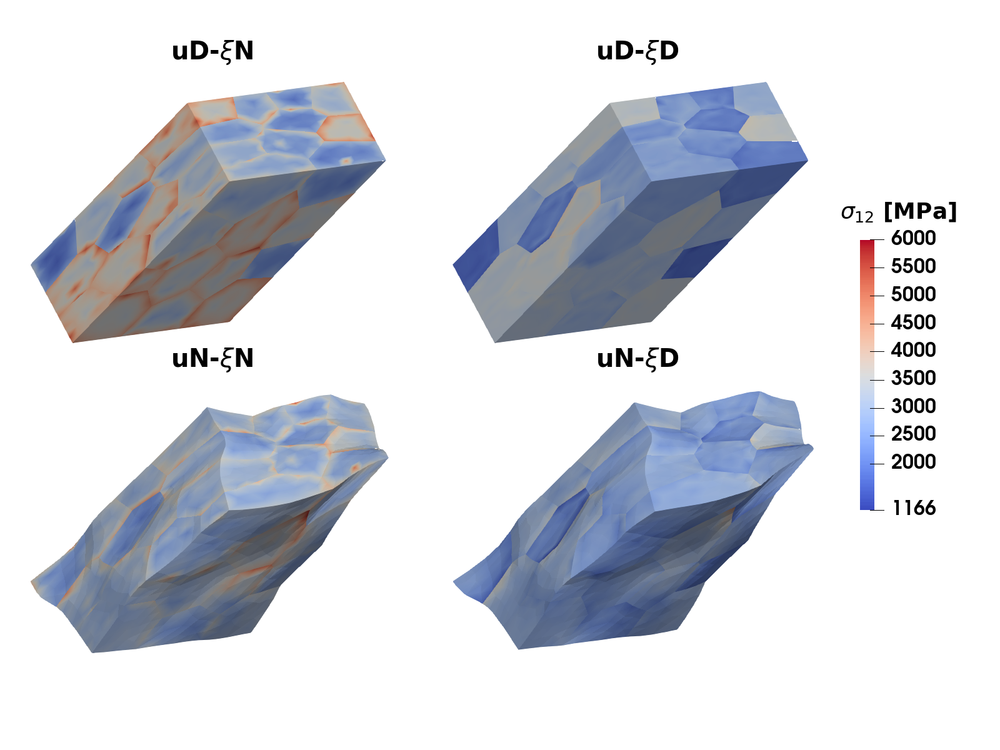
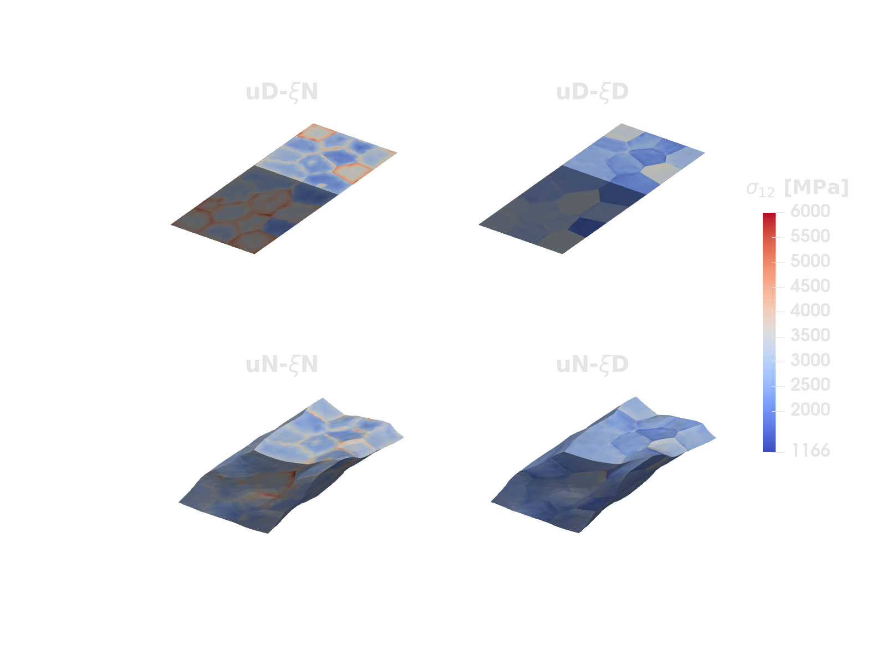
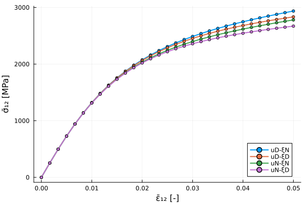
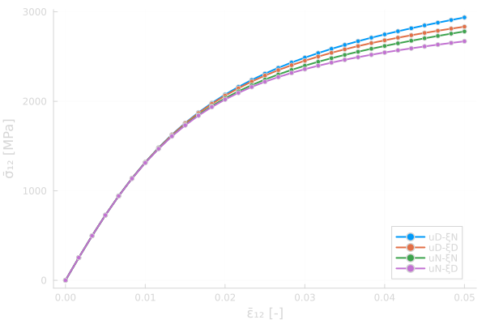

Gradient crystal plasticity on a polycrystal SVE
Keywords: crystal plasticity, gradient-extended plasticity, computational homogenization, mixed/dual formulations, subdomains, interface elements, algebraic variables, automatic differentiation


Figure 1: Shear stress $\sigma_{12}$ at the end of the loading in a 50-grain statistical volume element (SVE) subjected to macroscopic simple shear, for the four combinations of boundary conditions studied below (semi-dual format, deformation scaled by a factor 10, colour range clamped at $6000\,\mathrm{MPa}$).
This example is also available as a Jupyter notebook: gradient_crystal_plasticity.ipynb.
Introduction
This example reimplements the numerical study in [23]: a polycrystal modeled with gradient-extended crystal (visco)plasticity, where the slip on each slip system is penalized by an energy in terms of the dislocation density tensor, i.e. the gradients of the slips. Two variational formats of the same model are implemented:
- the primal format, where the displacement $\boldsymbol{u}$ and the slips $\gamma_\alpha$ are the global unknowns, and
- the semi-dual format, where the slips are replaced by the energetically conjugated microstresses $\boldsymbol{\xi}_\alpha$ as global unknowns, and the slips become local (quadrature point) variables, see [24].
The model is solved on statistical volume elements (SVEs) with a random polycrystal structure generated by Neper, and we compare the homogenized response for the different combinations of boundary conditions on the displacements (Dirichlet/Neumann) and on the microstresses (microhard/microfree) that give upper and lower bounds of the effective incremental energy, cf. [23].
The original code for the paper was written in 2016-2017 against a very early version of Ferrite (then called JuAFEM), and large parts of it, e.g. the mesh reader, the handling of dofs living only on subdomains, node duplication at grain boundaries and the constraint handling had to be written by hand. This example shows how the same analysis can be written with the development version of Ferrite and its surrounding ecosystem. Run it with the repository's docs environment; it uses the new directional-derivative API. In particular we use
FerriteMeshParser.jlto read the Abaqus.inpfile written by Neper, including the cell sets for the grains and the node/facet sets for the SVE surfaces,FerriteInterfaceElements.jlto duplicate the nodes at the grain boundaries (which the semi-dual format requires, since the microstress is discontinuous between grains),- a
SubDofHandlerfor the bulk cells,AffineConstraints to tie the displacements of the duplicated nodes, andDirichletconditions on facet and node sets, - an
AlgebraicVariablefor the macroscopic stress, which acts as Lagrange multiplier in the Neumann case where the average strain is prescribed weakly, and ForwardDiff.jlfor all tangents: the element tangent is obtained by differentiating the element residual, and for the semi-dual format the local (quadrature point) Newton solve is made differentiable by attaching its implicit derivative to the dual numbers.
Model
Kinematics and free energy
Small strains are assumed and the strain $\boldsymbol{\epsilon} = (\boldsymbol{u} \otimes \boldsymbol{\nabla})^\mathrm{sym}$ is split additively into an elastic part and a plastic part, where the latter originates from slip on the $M$ slip systems of the crystal:
\[\boldsymbol{\epsilon}^\mathrm{p} = \sum_{\alpha = 1}^M \gamma_\alpha \boldsymbol{P}_\alpha, \quad \boldsymbol{P}_\alpha = (\boldsymbol{s}_\alpha \otimes \boldsymbol{m}_\alpha)^\mathrm{sym},\]
with $\boldsymbol{s}_\alpha$ the slip direction and $\boldsymbol{m}_\alpha$ the slip plane normal (here: the 12 slip systems of an fcc crystal, randomly rotated in each grain). The free energy consists of the elastic energy and a gradient (defect) energy in terms of the edge and screw dislocation densities $\rho^\perp_\alpha = -\boldsymbol{s}_\alpha \cdot \boldsymbol{\nabla}\gamma_\alpha$ and $\rho^\odot_\alpha = \boldsymbol{k}_\alpha \cdot \boldsymbol{\nabla}\gamma_\alpha$ ($\boldsymbol{k}_\alpha = \boldsymbol{m}_\alpha \times \boldsymbol{s}_\alpha$),
\[\psi = \frac{1}{2} [\boldsymbol{\epsilon} - \boldsymbol{\epsilon}^\mathrm{p}] : \mathsf{E} : [\boldsymbol{\epsilon} - \boldsymbol{\epsilon}^\mathrm{p}] + \frac{1}{2} H l^2 \sum_\alpha \left[ (\rho^\perp_\alpha)^2 + (\rho^\odot_\alpha)^2 \right],\]
where $l$ is an internal length scale. The stress $\boldsymbol{\sigma} = \mathsf{E} : [\boldsymbol{\epsilon} - \boldsymbol{\epsilon}^\mathrm{p}]$, the resolved (Schmid) stress $\tau_\alpha = \boldsymbol{\sigma} : \boldsymbol{P}_\alpha$ and the microstress $\boldsymbol{\xi}_\alpha = \xi^\perp_\alpha \boldsymbol{s}_\alpha + \xi^\odot_\alpha \boldsymbol{k}_\alpha$ with $\xi^\perp_\alpha = H l^2\, \boldsymbol{s}_\alpha \cdot \boldsymbol{\nabla}\gamma_\alpha$ (and similarly for $\xi^\odot_\alpha$) follow from $\psi$. The slip rate is given by the Norton-type (overstress) law
\[\dot{\gamma}_\alpha = \frac{1}{t_*} \left[ \frac{|\tau^\mathrm{di}_\alpha|}{C} \right]^m \mathrm{sgn}(\tau^\mathrm{di}_\alpha),\]
in terms of the dissipative stress $\tau^\mathrm{di}_\alpha$, which is related to the energetic quantities through the microforce balance
\[-\tau_\alpha + \tau^\mathrm{di}_\alpha - \boldsymbol{\xi}_\alpha \cdot \boldsymbol{\nabla} = 0 \quad \text{in each grain}.\]
This balance is a partial differential equation for the slips, which requires boundary conditions on the grain boundaries: either microhard, $\gamma_\alpha = 0$ (no slip transmitted across the boundary), or microfree, $\boldsymbol{\xi}_\alpha \cdot \boldsymbol{n} = 0$. Following [23], microhard conditions are used between the grains, while both types are considered on the outer SVE boundary.
Primal and semi-dual formats
In the primal format the microforce balance is used directly in weak form with the slips as global fields. With backward Euler in time, the dissipative stress is a function of the slip increment, $\tau^\mathrm{di}_\alpha = C [t_* |\Delta\gamma_\alpha| / \Delta t]^{1/m} \mathrm{sgn}(\Delta\gamma_\alpha)$, and the problem reads: find $\boldsymbol{u}$ and $\gamma_\alpha$ such that
\[\begin{aligned} \int_\Omega \boldsymbol{\sigma} : \boldsymbol{\epsilon}[\delta\boldsymbol{u}] \,\mathrm{d}V &= 0 \quad \forall\, \delta\boldsymbol{u}, \\ \int_\Omega \left[ (\tau^\mathrm{di}_\alpha - \tau_\alpha)\, \delta\gamma_\alpha + \boldsymbol{\xi}_\alpha \cdot \boldsymbol{\nabla}\delta\gamma_\alpha \right] \mathrm{d}V &= 0 \quad \forall\, \delta\gamma_\alpha, \end{aligned}\]
where the microhard condition is a Dirichlet condition on $\gamma_\alpha$ and the microfree condition is natural. Note that $\tau^\mathrm{di}_\alpha$ has an infinite slope at $\Delta\gamma_\alpha = 0$ for $m > 1$, which makes Newton's method fragile; below we use a tiny regularization $|\Delta\gamma| \approx \sqrt{\Delta\gamma^2 + \delta^2}$ together with a line search.
In the semi-dual format a partial Legendre transformation of the gradient energy replaces the slip gradients by the microstresses as independent fields (living in $H(\mathrm{div})$ in each grain; here approximated with $H^1$ Lagrange elements per grain as in the paper). The slips then only appear pointwise and the flow rule is solved locally in each quadrature point. The global problem reads: find $\boldsymbol{u}$ and $\xi^\perp_\alpha, \xi^\odot_\alpha$ such that
\[\begin{aligned} \int_\Omega \boldsymbol{\sigma} : \boldsymbol{\epsilon}[\delta\boldsymbol{u}] \,\mathrm{d}V &= 0 \quad \forall\, \delta\boldsymbol{u}, \\ -\int_\Omega \left[ \frac{\xi^\perp_\alpha}{H l^2}\, \delta\xi^\perp_\alpha + \gamma_\alpha\, \boldsymbol{s}_\alpha \cdot \boldsymbol{\nabla}\delta\xi^\perp_\alpha \right] \mathrm{d}V &= 0 \quad \forall\, \delta\xi^\perp_\alpha, \end{aligned}\]
and similarly for $\xi^\odot_\alpha$ with $\boldsymbol{k}_\alpha$, where in each quadrature point $(\gamma_\alpha, \tau^\mathrm{di}_\alpha)$ solve the local problem
\[-\tau_\alpha + \tau^\mathrm{di}_\alpha - \chi_\alpha = 0, \qquad \gamma_\alpha - {}^n\gamma_\alpha - \frac{\Delta t}{t_*} \left[\frac{|\tau^\mathrm{di}_\alpha|}{C}\right]^m \mathrm{sgn}(\tau^\mathrm{di}_\alpha) = 0,\]
with $\chi_\alpha = \boldsymbol{\xi}_\alpha \cdot \boldsymbol{\nabla} = \boldsymbol{s}_\alpha \cdot \boldsymbol{\nabla}\xi^\perp_\alpha + \boldsymbol{k}_\alpha \cdot \boldsymbol{\nabla}\xi^\odot_\alpha$. The boundary conditions are now of the opposite type: microhard is the natural condition (the microstress is simply independent in each grain), while microfree, $\boldsymbol{\xi}_\alpha \cdot \boldsymbol{n} = 0$, is a Dirichlet condition on the microstress. As in the original implementation we impose the stronger condition $\xi^\perp_\alpha = \xi^\odot_\alpha = 0$ on the outer boundary, which is simpler than constraining the normal component (which would require coupling the two components at nodes on edges and corners). The semi-dual local problem is smooth in $\tau^\mathrm{di}_\alpha$, so no regularization is needed.
Boundary conditions and bounds
The SVE occupies a cube of side $L_\square = N^{1/3} L$, with $N$ the number of grains and $L$ the typical grain size, and is loaded in simple shear by prescribing the macroscopic displacement gradient $\bar{\boldsymbol{H}}(t) = \frac{t}{T}\bar{\Gamma}\, \boldsymbol{e}_1 \otimes \boldsymbol{e}_2$. The displacement boundary condition is either Dirichlet, $\boldsymbol{u} = \bar{\boldsymbol{H}} \cdot \boldsymbol{x}$ on the outer boundary ($u$D), or Neumann ($u$N), where the volume average of the strain is prescribed weakly,
\[\int_\Omega \left[ \boldsymbol{\epsilon} - \bar{\boldsymbol{\epsilon}} \right] \mathrm{d}V = \boldsymbol{0}, \quad \bar{\boldsymbol{\epsilon}} = \bar{\boldsymbol{H}}^\mathrm{sym},\]
with the constant macroscopic stress $\bar{\boldsymbol{\sigma}}$ as the (symmetric) Lagrange multiplier. The multiplier is a global unknown without a spatial domain, which is precisely what an AlgebraicVariable is.
For the Neumann case, we add the following term to the incremental potential of either format:
\[-\bar{\boldsymbol{\sigma}} : \int_\Omega \left[\boldsymbol{\epsilon}[\boldsymbol{u}] - \bar{\boldsymbol{\epsilon}}\right] \,\mathrm{d}V.\]
Taking variations with respect to the displacement and the multiplier gives the two coupled weak equations
\[\begin{aligned} R_u[\delta\boldsymbol{u}] &:= \int_\Omega (\boldsymbol{\sigma} - \bar{\boldsymbol{\sigma}}) : \boldsymbol{\epsilon}[\delta\boldsymbol{u}] \,\mathrm{d}V = 0 \quad \forall\,\delta\boldsymbol{u}, \\ R_{\bar\sigma}[\delta\bar{\boldsymbol{\sigma}}] &:= -\int_\Omega \delta\bar{\boldsymbol{\sigma}} : (\boldsymbol{\epsilon}[\boldsymbol{u}] - \bar{\boldsymbol{\epsilon}}) \,\mathrm{d}V = 0 \quad \forall\,\delta\bar{\boldsymbol{\sigma}}. \end{aligned}\]
Here the multiplier variations are spatially constant symmetric tensors. The first equation replaces the displacement equation above and gives the uniform boundary traction $\boldsymbol{t} = \bar{\boldsymbol{\sigma}} \cdot \boldsymbol{n}$; the second enforces the prescribed average strain. The slip or microstress equations are unchanged.
In element_residual!, the displacement test function is the vector basis function $\boldsymbol{N}_i$, so ru[i] accumulates the first equation using δε = shape_symmetric_gradient(cv.u, qp, i). For the second equation we choose each constant symmetric tensor basis function $\boldsymbol{B}_k$ of the multiplier in turn: δσ̄ = algebraic_basis_value(prob.σ̄vals, k) returns $\boldsymbol{B}_k$, and re[layout.σ̄[k]] accumulates $-\boldsymbol{B}_k : (\boldsymbol{\epsilon} - \bar{\boldsymbol{\epsilon}})\,\mathrm{d}V$. Assembly sums these contributions over all bulk elements into the same global multiplier equations. The minus signs follow from the potential term above.
The weak constraint does not see rigid body motions, so these are removed by fixing displacement components at three corners of the cube (the standard 3-2-1 rule); since the constraint only involves the strain, these point constraints are free of reaction forces and do not affect the homogenized response. Combined with microhard ($\xi$N) or microfree ($\xi$D) conditions on the outer boundary this gives the four cases $u$D-$\xi$N, $u$D-$\xi$D, $u$N-$\xi$N and $u$N-$\xi$D. The main result of [23] is that the effective incremental energy $\bar{\pi}$ (the stationary value of the incremental potential, see the paper for its definition), averaged over many SVE realizations, is bounded from above by the $u$D-$\xi$N result and, approximately, from below by the $u$N-$\xi$D result:
\[\bar{\pi}^{u\mathrm{N}\text{-}\xi\mathrm{D}} \lesssim \left( \bar{\pi}^{u\mathrm{N}\text{-}\xi\mathrm{N}}, \bar{\pi}, \bar{\pi}^{u\mathrm{D}\text{-}\xi\mathrm{D}} \right) \leq \bar{\pi}^{u\mathrm{D}\text{-}\xi\mathrm{N}}.\]
The bounds are statistical statements (expected values over realizations) and, since the four loading cases have different histories, the ordering can be slightly violated for a single realization at a given time step. Below we only check the ordering for the single realization considered here. For the 50-grain SVE we obtain $\bar{\pi} = 26.5$, $19.5$, $26.7$ and $19.0\,\mathrm{MPa}$ at $t = 15\,\mathrm{s}$ for $u$D-$\xi$N, $u$D-$\xi$D, $u$N-$\xi$N and $u$N-$\xi$D, close to Figure 6 in the paper ($29.0$, $21.4$, $29.0$ and $20.5\,\mathrm{MPa}$) and with the same marginal violation $u$N-$\xi$N $>$ $u$D-$\xi$N that is discussed there.
Implementation
The default settings of this example use a coarse 10-grain SVE and large time steps such that it runs in a few minutes; the figures on this page are from the 50-grain SVE with the time stepping of the paper, obtained by setting the environment variable FERRITE_GCP_FULL=true before running the script.
using Ferrite, FerriteMeshParser, FerriteInterfaceElements, VTKHDFusing Tensors, ForwardDiff, LinearAlgebra, SparseArrays, Random, Printf, Downloadsimport LinearSolveusing Ferrite: OrderedSetimport Plotsconst FULL = get(ENV, "FERRITE_GCP_FULL", "false") == "true"falseMesh
The SVE is generated with Neper (neper -T -n N -id 1 -morpho "diameq:dirac(1),1-sphericity:lognormal(0.145,0.03)", followed by neper -M N.tess -dim 3 -order 1 -format inp), see the appendix of the paper. The resulting Abaqus file contains the tetrahedra, a cell set polyX for each grain and node sets for the six faces of the unit cube, which FerriteMeshParser reads directly (the face node sets are turned into facet sets). We scale the unit cube to the side length $L_\square = N^{1/3}$ with $L = 1\,\mathrm{\mu m}$ as the length unit.
In the semi-dual format the microstresses are discontinuous across grain boundaries, so the grains must not share nodes. FerriteInterfaceElements can insert interface cells between subdomains, which duplicates the nodes on the shared facets; the displacement is made continuous again by tying the duplicates with affine constraints below. The grid then contains two kinds of cells: the tetrahedra of the grains, collected in the cell set "bulk", and the zero-thickness interface cells (one per grain boundary facet). Only the tetrahedra carry dofs and are integrated over; the interface cells are only used to find the duplicated nodes here, but could carry a grain boundary energy or a cohesive law.
function load_sve(inpfile) grid = get_ferrite_grid(inpfile; generate_facetsets = false) dim = Ferrite.getspatialdim(grid) grains = sort!(filter(startswith("poly"), collect(keys(Ferrite.getcellsets(grid)))); by = n -> parse(Int, chopprefix(n, "poly"))) L = length(grains)^(1 / dim) transform_coordinates!(grid, x -> L * x) tol = 1.0e-8 * L faces = ("x0", "x1", "y0", "y1", "z0", "z1") for name in faces addfacetset!(grid, name, FerriteMeshParser.create_facetset(grid, getnodeset(grid, name))) end addfacetset!(grid, "boundary", union((getfacetset(grid, n) for n in faces)...)) grid = insert_interfaces(grid, grains) # Corner sets used below to remove rigid-body motion. for (name, corner) in (("origin", zero(Vec{dim})), ("corner_x", L * basevec(Vec{dim}, 1)), ("corner_y", L * basevec(Vec{dim}, 2))) addnodeset!(grid, name, x -> norm(x - corner) < tol) end addnodeset!(grid, "grain_boundary", OrderedSet{Int}(n for c in getcells(grid) if c isa InterfaceCell for n in c.nodes)) addcellset!(grid, "bulk", OrderedSet{Int}(i for (i, c) in enumerate(getcells(grid)) if c isa Tetrahedron)) grain_of_cell = zeros(Int, getncells(grid)) for (g, name) in enumerate(grains), c in getcellset(grid, name) grain_of_cell[c] = g end return grid, grain_of_cellendload_sve (generic function with 1 method)Material
The material parameters are those of the paper in the units MPa, μm and s, with the grain size $L = 1\,\mathrm{\mu m}$. The gradient hardening parameter and the length scale only appear in the combination $H l^2$; Table 1 of the paper lists $H = 2 \cdot 10^7\,\mathrm{MPa}$ and $l = 10^{-9}\,\mathrm{m}$ with $L = 10^3 l$, but the driver script used for the computations of the paper used $l = 0.1 L$ and $H = 0.1 E$, i.e. a ten times larger $H l^2 = 200\,\mathrm{MPa\,\mu m^2}$, which is what reproduces the energies of Figure 6 in the paper. Each grain gets the 12 fcc slip systems rotated by a random rotation. The fcc slip systems and the SVE mesh are three-dimensional; the material and state types below infer their tensor dimensions from these inputs.
struct CrystalMaterial{dim, T, N4, N2} E::SymmetricTensor{4, dim, T, N4} s::Vector{Vec{dim, T}} # slip directions k::Vector{Vec{dim, T}} # m × s P::Vector{SymmetricTensor{2, dim, T, N2}} # (s ⊗ m)ˢʸᵐ Hl2::T # gradient hardening H l² C::T # reference stress tstar::T # reference time m::T # Norton exponentendnslips(mat::CrystalMaterial) = length(mat.s)function fcc_slip_systems() planes = [Vec((1.0, 1.0, -1.0)), Vec((1.0, -1.0, -1.0)), Vec((1.0, -1.0, 1.0)), Vec((1.0, 1.0, 1.0))] ./ √3 dirs = [ (0.0, 1.0, 1.0), (1.0, 0.0, 1.0), (1.0, -1.0, 0.0), (0.0, 1.0, -1.0), (1.0, 0.0, 1.0), (1.0, 1.0, 0.0), (0.0, 1.0, 1.0), (1.0, 0.0, -1.0), (1.0, 1.0, 0.0), (0.0, 1.0, -1.0), (1.0, 0.0, -1.0), (1.0, -1.0, 0.0), ] s = [Vec(d) / √2 for d in dirs] m = repeat(planes; inner = 3) # three slip directions per plane return s, mendfunction CrystalMaterial(; E, ν, H, l, C, tstar, m, rotation) dim = size(rotation, 1) λ = E * ν / ((1 + ν) * (1 - 2ν)) μ = E / (2(1 + ν)) δ(i, j) = i == j ? 1.0 : 0.0 Eᵉ = SymmetricTensor{4, dim}((i, j, k, l) -> λ * δ(i, j) * δ(k, l) + μ * (δ(i, k) * δ(j, l) + δ(i, l) * δ(j, k))) s0, m0 = fcc_slip_systems() s = [rotation ⋅ sα for sα in s0] n = [rotation ⋅ mα for mα in m0] k = [nα × sα for (sα, nα) in zip(s, n)] P = [symmetric(sα ⊗ nα) for (sα, nα) in zip(s, n)] return CrystalMaterial(Eᵉ, s, k, P, H * l^2, C, tstar, m)endfunction random_rotation(rng) z = 2rand(rng) - 1 ϕ = 2π * rand(rng) u = Vec((sqrt(1 - z^2) * cos(ϕ), sqrt(1 - z^2) * sin(ϕ), z)) # uniform on the sphere θ = 2π * rand(rng) # The skew tensor represents the cross product: W ⋅ v = u × v. W = Tensor{2, length(u)}( [ 0.0 -u[3] u[2] u[3] 0.0 -u[1] -u[2] u[1] 0.0 ] ) return one(W) + sin(θ) * W + (1 - cos(θ)) * (W ⋅ W) # Rodrigues' formulaendfunction paper_materials(ngrains) rng = Xoshiro(1234) return [ CrystalMaterial(; E = 200.0e3, ν = 0.3, H = 2.0e4, l = 0.1, C = 1.0e3, tstar = 1.0e3, m = 2.0, rotation = random_rotation(rng)) for _ in 1:ngrains ]endpaper_materials (generic function with 1 method)Quadrature point state
The state in each quadrature point holds the slips and dissipative stresses of the last converged step, the stress and strain for postprocessing, and the free energy and incremental potential $\pi$ (integrated to $\bar{\pi}$) of the current step. For the semi-dual format it also caches the solution of the local problem and its derivative, such that the local problem is solved only once per quadrature point and assembly, even though the element residual is evaluated several times when computing the element tangent with ForwardDiff.
mutable struct QPState{S} γ::Vector{Float64} τdi::Vector{Float64} σ::S ε::S φ::Float64 π::Float64 Y::Vector{Float64} # cache: outer variables (ε, χ⊥, χ⊙) of the local problem, X::Vector{Float64} # its solution (γ, τᵈⁱ) A::Matrix{Float64} # and the derivative dX/dY Avalid::BoolendThe vectors $X$ and $Y$ of the local problem are laid out as described by
struct LocalLayout ε::UnitRange{Int} # Y: strain in Voigt notation χp::UnitRange{Int} # Y: χ⊥ₐ χo::UnitRange{Int} # Y: χ⊙ₐ γ::UnitRange{Int} # X: slips τdi::UnitRange{Int} # X: dissipative stressesendfunction LocalLayout(mat::CrystalMaterial{dim}) where {dim} M = nslips(mat) nε = Tensors.n_components(SymmetricTensor{2, dim}) return LocalLayout(1:nε, nε .+ (1:M), (nε + M) .+ (1:M), 1:M, M .+ (1:M))endnX(ll::LocalLayout) = last(ll.τdi)nY(ll::LocalLayout) = last(ll.χo)function QPState(mat) M = nslips(mat) ll = LocalLayout(mat) z = zero(eltype(mat.P)) return QPState( zeros(M), zeros(M), z, z, 0.0, 0.0, fill(NaN, nY(ll)), zeros(nX(ll)), zeros(nX(ll), nY(ll)), false )endfunction update_state!(new::QPState, old::QPState) new.γ .= old.γ new.τdi .= old.τdi new.σ = old.σ new.ε = old.ε new.φ = old.φ new.π = old.π return newendupdate_state! (generic function with 1 method)Local problem of the semi-dual format
The unknowns of the local problem are $X = (\gamma_\alpha, \tau^\mathrm{di}_\alpha)$ and the "outer" variables provided by the element are $Y = (\boldsymbol{\epsilon}, \chi^\perp_\alpha, \chi^\odot_\alpha)$. The residual is written generically such that both its Jacobians (with respect to $X$ for the local Newton iterations and with respect to $Y$ for the consistent tangent) can be computed with ForwardDiff.
function local_residual!(R, X, Y, γn, mat::CrystalMaterial{dim}, Δt) where {dim} ll = LocalLayout(mat) ε = fromvoigt(SymmetricTensor{2, dim}, view(Y, ll.ε)) γ = view(X, ll.γ) τdi = view(X, ll.τdi) εp = zero(promote_type(eltype(X), eltype(Y))) * mat.P[1] for α in 1:nslips(mat) εp += γ[α] * mat.P[α] end σ = mat.E ⊡ (ε - εp) for α in 1:nslips(mat) τ = σ ⊡ mat.P[α] χ = Y[ll.χp[α]] + Y[ll.χo[α]] R[ll.γ[α]] = (-τ + τdi[α] - χ) / mat.C R[ll.τdi[α]] = (γ[α] - γn[α]) - Δt / mat.tstar * (abs(τdi[α]) / mat.C)^mat.m * sign(τdi[α]) end return Rendfunction local_newton!(X, Y, γn, mat, Δt; tol = 1.0e-12, maxiter = 50) R = similar(X) J = Matrix{eltype(X)}(undef, length(X), length(X)) f!(R, X) = local_residual!(R, X, Y, γn, mat, Δt) cfg = ForwardDiff.JacobianConfig(f!, R, X) for _ in 1:maxiter f!(R, X) norm(R) < tol && return X ForwardDiff.jacobian!(J, f!, R, X, cfg) ldiv!(lu!(J), R) X .-= R end return error("local problem did not converge")endlocal_newton! (generic function with 1 method)The element residual below calls local_solve with a vector of ForwardDiff dual numbers when the element tangent is computed. Instead of differentiating through the Newton iterations we solve the local problem for the values, compute the derivative $\mathrm{d}X/\mathrm{d}Y = -[\partial R/\partial X]^{-1} \partial R/\partial Y$ from the implicit function theorem, and attach it to the dual numbers. If $Y = Y_v + \mathrm{d}Y$ is a vector of dual numbers, Y .- Yv has zero value and retains only their derivative parts. Thus X + A * (Y - Yv) has the converged value $X$ and derivative $A\,\mathrm{d}Y$. This applies the chain rule exactly for first derivatives; it does not take another Newton step or approximate the value of the local solution.
value(x::Real) = ForwardDiff.value(x)value(x::SymmetricTensor{2, dim}) where {dim} = SymmetricTensor{2, dim}(map(ForwardDiff.value, Tensors.get_data(x)))function local_solve(Y::AbstractVector{T}, st::QPState, γn, mat, Δt) where {T} ll = LocalLayout(mat) Yv = ForwardDiff.value.(Y) if Yv != st.Y st.X[ll.γ] .= st.γ # initial guess st.X[ll.τdi] .= st.τdi local_newton!(st.X, Yv, γn, mat, Δt) copyto!(st.Y, Yv) st.Avalid = false end T === Float64 && return copy(st.X) if !st.Avalid JX = ForwardDiff.jacobian((R, X) -> local_residual!(R, X, Yv, γn, mat, Δt), zeros(nX(ll)), st.X) JY = ForwardDiff.jacobian((R, Y) -> local_residual!(R, st.X, Y, γn, mat, Δt), zeros(nX(ll)), Yv) st.A .= -(JX \ JY) st.Avalid = true end dY = Y .- Yv X = st.A * dY X .+= st.X return Xendlocal_solve (generic function with 1 method)Dissipation of the primal format
With backward Euler, the dissipative stress of the primal format is a function of the slip increment. The regularized absolute value $|\Delta\gamma|_\delta = \sqrt{\Delta\gamma^2 + \delta^2}$ removes the infinite slope at $\Delta\gamma = 0$, and the corresponding (regularized) dissipation $\Delta t\, \phi$ enters the incremental potential.
function dissipative_stress(Δγ, mat::CrystalMaterial, Δt, δ) A = mat.C * (mat.tstar / Δt)^(1 / mat.m) return A * Δγ * (Δγ^2 + δ^2)^((1 / mat.m - 1) / 2)endfunction dissipation(Δγ, mat::CrystalMaterial, Δt, δ) A = mat.C * (mat.tstar / Δt)^(1 / mat.m) p = (mat.m + 1) / mat.m return A * mat.m / (mat.m + 1) * ((Δγ^2 + δ^2)^(p / 2) - δ^p)enddissipation (generic function with 1 method)Element residuals
The local dof layout of an element is described by the ranges of the displacement field, the $M$ gradient fields ($\xi^\perp_\alpha$ and $\xi^\odot_\alpha$ in the semi-dual format, $\gamma_\alpha$ in the primal format), and, in the Neumann case, the dofs of the multiplier $\bar{\boldsymbol{\sigma}}$ that are appended to the element dofs.
struct Layout u::UnitRange{Int} ξp::Vector{UnitRange{Int}} ξo::Vector{UnitRange{Int}} σ̄::UnitRange{Int}endstruct Problem{CV, SV, F} format::Symbol # :dual or :primal cv::CV # MultiFieldCellValues for displacement and scalar fields layout::Layout σ̄vals::SV # AlgebraicValues of σ̄ (Neumann) or nothing (Dirichlet) Hbar::F # t -> macroscopic displacement gradient Δt::Float64 δreg::Float64 # regularization of |Δγ| (primal format)endBoth formats share the displacement part of the residual and the Neumann terms; the dispatch on the format is made inside the loop over quadrature points. Only the residual is coded, the element tangent is computed with ForwardDiff in the assembly. The state variables are also updated here (with the values of the dual numbers) such that the states are consistent with the last evaluated residual.
function element_residual!(re, ae, ae_n, states, states_n, mat::CrystalMaterial{dim}, prob::Problem, t) where {dim} (; cv, layout, Δt, δreg) = prob M = nslips(mat) ll = LocalLayout(mat) T = eltype(ae) fill!(re, zero(T)) u = @view ae[layout.u] ru = @view re[layout.u] nu = getnbasefunctions(cv.u) ns = getnbasefunctions(cv.s) Y = Vector{T}(undef, nY(ll)) ξp = Vector{T}(undef, M) ξo = Vector{T}(undef, M) γ = Vector{T}(undef, M) ∇γ = Vector{Vec{dim, T}}(undef, M) if prob.σ̄vals !== nothing σ̄ = algebraic_value(prob.σ̄vals, ae, layout.σ̄) ε̄ = symmetric(prob.Hbar(t)) end for qp in 1:getnquadpoints(cv) dΩ = getdetJdV(cv, qp) ∇u = function_gradient(cv.u, qp, u) ε = symmetric(∇u) st, stn = states[qp], states_n[qp] εp = zero(T) * mat.P[1] if prob.format === :dual tovoigt!(view(Y, ll.ε), ε) for α in 1:M ap = view(ae, layout.ξp[α]) ao = view(ae, layout.ξo[α]) ξp[α] = function_value(cv.s, qp, ap) ξo[α] = function_value(cv.s, qp, ao) Y[ll.χp[α]] = function_directional_derivative(cv.s, qp, ap, mat.s[α]) Y[ll.χo[α]] = function_directional_derivative(cv.s, qp, ao, mat.k[α]) end X = local_solve(Y, st, stn.γ, mat, Δt) γ = view(X, ll.γ) τdi = view(X, ll.τdi) for α in 1:M εp += γ[α] * mat.P[α] end σ = mat.E ⊡ (ε - εp) for α in 1:M rp = view(re, layout.ξp[α]) ro = view(re, layout.ξo[α]) sα, kα = mat.s[α], mat.k[α] ξpα, ξoα, γα = ξp[α], ξo[α], γ[α] for i in 1:ns δξ = shape_value(cv.s, qp, i) ∇δξ = shape_gradient(cv.s, qp, i) rp[i] -= (ξpα / mat.Hl2 * δξ + (∇δξ ⋅ sα) * γα) * dΩ ro[i] -= (ξoα / mat.Hl2 * δξ + (∇δξ ⋅ kα) * γα) * dΩ end end # Semi-dual free energy φ = ψᵉ - ψᵍ* and incremental potential # These are only used for postprocessing, so discard derivatives first. εe = value(ε - εp) φ = 1 / 2 * εe ⊡ mat.E ⊡ εe - sum(value(ξp[α])^2 + value(ξo[α])^2 for α in 1:M) / (2mat.Hl2) st.γ .= value.(γ) st.τdi .= value.(τdi) π = φ - stn.φ for α in 1:M χ = value(Y[ll.χp[α]]) + value(Y[ll.χo[α]]) γα, τdiα = st.γ[α], st.τdi[α] π += τdiα * (γα - stn.γ[α]) - χ * γα - Δt / mat.tstar * mat.C / (mat.m + 1) * (abs(τdiα) / mat.C)^(mat.m + 1) end else # primal for α in 1:M aγ = view(ae, layout.ξp[α]) γ[α] = function_value(cv.s, qp, aγ) ∇γ[α] = function_gradient(cv.s, qp, aγ) εp += γ[α] * mat.P[α] end σ = mat.E ⊡ (ε - εp) εe = value(ε - εp) ψe = 1 / 2 * εe ⊡ mat.E ⊡ εe ψg = 0.0 # gradient energy, summed over the slip systems Δtϕ = 0.0 # dissipation for α in 1:M γdofs = layout.ξp[α] rγ = view(re, γdofs) τ = σ ⊡ mat.P[α] Δγ = γ[α] - function_value(cv.s, qp, view(ae_n, γdofs)) τdi = dissipative_stress(Δγ, mat, Δt, δreg) gp = ∇γ[α] ⋅ mat.s[α] go = ∇γ[α] ⋅ mat.k[α] ξ = mat.Hl2 * (gp * mat.s[α] + go * mat.k[α]) for i in 1:ns δγ = shape_value(cv.s, qp, i) ∇δγ = shape_gradient(cv.s, qp, i) rγ[i] += (δγ * (τdi - τ) + ∇δγ ⋅ ξ) * dΩ end ψg += mat.Hl2 / 2 * (value(gp)^2 + value(go)^2) Δtϕ += dissipation(value(Δγ), mat, Δt, δreg) st.γ[α] = value(γ[α]) st.τdi[α] = value(τdi) end # Same reference as in the semi-dual format: φ = ψᵉ - ψᵍ* = ψᵉ - ψᵍ at the solution, # and the term -χ ⋆ γ of the incremental potential equals ξ ⋆ ∇γ = 2ψᵍ after # integration by parts φ = ψe - ψg π = ψe + ψg - stn.φ + Δtϕ end σu = prob.σ̄vals === nothing ? σ : σ - σ̄ for i in 1:nu δε = shape_symmetric_gradient(cv.u, qp, i) ru[i] += (δε ⊡ σu) * dΩ end if prob.σ̄vals !== nothing # Neumann: average-strain constraint for (k, I) in pairs(layout.σ̄) δσ̄ = algebraic_basis_value(prob.σ̄vals, k) re[I] -= (δσ̄ ⊡ (ε - ε̄)) * dΩ end end st.σ = value(σ) st.ε = value(ε) st.φ = φ st.π = π end return reendelement_residual! (generic function with 1 method)Dofs, constraints and assembly
The fields live on the tetrahedra, so they are added to a SubDofHandler for the "bulk" cell set. Since the nodes on the grain boundaries are duplicated, all fields are automatically discontinuous between grains. For the displacements, which should be continuous, the duplicates are tied together with AffineConstraints. To find the dofs of the two copies of a node, the interface cells get the displacement field too, on a second SubDofHandler with an InterfaceCellInterpolation: vertex dofs are shared by node id, so this adds no dofs, and the cell dofs of an interface cell are exactly the displacement dofs of its here nodes followed by those of its there nodes. One tie per node pair, with the higher node id constrained to the lower. A node at a triple junction is duplicated twice, so the ties are nested ($u_{A''} = u_{A'}$ with $u_{A'} = u_A$); the constraint handler resolves such chains in close!. Constraints added later override earlier ones, so the Dirichlet conditions are added after the ties.
function setup(grid, materials, format, ubc, ξbc, Hbar, Δt; δreg = 1.0e-6) M = nslips(materials[1]) dim = Ferrite.getspatialdim(grid) ip = Lagrange{RefTetrahedron, 1}() dh = DofHandler(grid) sdh = SubDofHandler(dh, getcellset(grid, "bulk")) add!(sdh, :u, ip^dim) if format === :dual names_p = [Symbol("ξ⊥", α) for α in 1:M] names_o = [Symbol("ξ⊙", α) for α in 1:M] else names_p = [Symbol("γ", α) for α in 1:M] names_o = Symbol[] end foreach(n -> add!(sdh, n, ip), names_p) foreach(n -> add!(sdh, n, ip), names_o) sdh_interface = SubDofHandler(dh, getcellset(grid, "interfaces")) add!(sdh_interface, :u, InterfaceCellInterpolation(Lagrange{RefTriangle, 1}())^dim) σ̄var = AlgebraicVariable{SymmetricTensor{2, dim}}() σ̄vals = ubc === :neumann ? AlgebraicValues(σ̄var) : nothing ubc === :neumann && add!(dh, :σ̄, σ̄var) close!(dh) n = ndofs_per_cell(sdh) nσ̄ = ubc === :neumann ? getnbasefunctions(σ̄vals) : 0 layout = Layout(dof_range(sdh, :u), [dof_range(sdh, n) for n in names_p], [dof_range(sdh, n) for n in names_o], (n + 1):(n + nσ̄)) ch = ConstraintHandler(dh) for cell in CellIterator(sdh_interface) c = getcells(grid, cellid(cell)) udofs = reshape(celldofs(cell), dim, :) # one column per vertex: the `here` vertices, then the `there` vertices nv = length(c.here.nodes) for (v, (h, t)) in enumerate(zip(c.here.nodes, c.there.nodes)) slaves, masters = h > t ? (udofs[:, v], udofs[:, nv + v]) : (udofs[:, nv + v], udofs[:, v]) for (slave, master) in zip(slaves, masters) add!(ch, AffineConstraint(slave, [master => 1.0], 0.0)) end end end if ubc === :dirichlet add!(ch, Dirichlet(:u, getfacetset(grid, "boundary"), (x, t) -> Hbar(t) ⋅ x)) else # remove the rigid body motions: fix the origin, u₂ and u₃ on the x-axis, u₃ on the y-axis add!(ch, Dirichlet(:u, getnodeset(grid, "origin"), Returns(zero(Vec{dim})))) add!(ch, Dirichlet(:u, getnodeset(grid, "corner_x"), Returns(zeros(dim - 1)), collect(2:dim))) add!(ch, Dirichlet(:u, getnodeset(grid, "corner_y"), Returns(zeros(dim - 2)), collect(3:dim))) end if format === :dual && ξbc === :microfree for name in vcat(names_p, names_o) add!(ch, Dirichlet(name, getfacetset(grid, "boundary"), Returns(0.0))) end elseif format === :primal for name in names_p isempty(getnodeset(grid, "grain_boundary")) || add!(ch, Dirichlet(name, getnodeset(grid, "grain_boundary"), Returns(0.0))) ξbc === :microhard && add!(ch, Dirichlet(name, getfacetset(grid, "boundary"), Returns(0.0))) end end close!(ch) # Four points integrate the quadratic ξ δξ term exactly; the archived paper code # used one point, which underintegrates this term. # Possible optimization for the dual format on affine linear tetrahedra: ε and # the directional gradients of ξ are constant, so matching previous material # states permit reusing the local material solution and tangent across points # while still integrating ξ δξ with four points. Keep the per-point evaluation # here to support quadratic elements and differing quadrature-point histories. qr = QuadratureRule{RefTetrahedron}(2) cv = MultiFieldCellValues(qr, (u = ip^dim, s = ip)) prob = Problem(format, cv, layout, σ̄vals, Hbar, Δt, δreg) if ubc === :neumann coupling = CellCoupling(getcellset(grid, "bulk"); algebraic_coupling = ((:u, :σ̄),)) K = allocate_matrix(dh, ch; algebraic_couplings = coupling) else K = allocate_matrix(dh, ch) end states = [[QPState(materials[1]) for _ in 1:getnquadpoints(cv)] for _ in 1:getncells(grid)] states_n = deepcopy(states) return dh, sdh, ch, K, prob, states, states_nendsetup (generic function with 1 method)The assembly computes the element tangent with ForwardDiff.jacobian!, which also returns the residual. In the Neumann case the dof vector of each element is augmented with the (global) dofs of the multiplier.
function assemble_system!(K, r, a, a_n, dh, sdh, prob, states, states_n, materials, grain_of_cell, t) assembler = start_assemble(K, r) n = ndofs_per_cell(sdh) nσ̄ = length(prob.layout.σ̄) dofs = Vector{Int}(undef, n + nσ̄) nσ̄ > 0 && (dofs[prob.layout.σ̄] .= algebraic_dofs(dh, :σ̄)) re = zeros(n + nσ̄) Ke = zeros(n + nσ̄, n + nσ̄) ae = zeros(n + nσ̄) ae_n = zeros(n + nσ̄) cellid = Ref(0) f! = (re, ae) -> element_residual!(re, ae, ae_n, states[cellid[]], states_n[cellid[]], materials[grain_of_cell[cellid[]]], prob, t) cfg = ForwardDiff.JacobianConfig(f!, re, ae) for cell in CellIterator(sdh) cellid[] = Ferrite.cellid(cell) copyto!(dofs, celldofs(cell)) ae .= view(a, dofs) ae_n .= view(a_n, dofs) reinit!(prob.cv, cell) ForwardDiff.jacobian!(Ke, f!, re, ae, cfg) assemble!(assembler, dofs, Ke, re) end returnendassemble_system! (generic function with 1 method)Time stepping and Newton iterations
The solution is extrapolated from the previous step as predictor (this keeps the primal format away from the singular point $\Delta\gamma_\alpha = 0$ of the dissipative stress). The Newton iterations use a backtracking line search based on the natural monotonicity test of Deuflhard: a trial point is accepted if the simplified Newton correction (with the already factorized tangent) is shorter than the current one. Unlike a test on the residual norm this is insensitive to the very different scales of the residual blocks (forces, microstress equations and the multiplier equations). We use the caching interface of LinearSolve to reuse the symbolic factorization between Newton iterations, since the sparsity pattern is fixed. Assigning A marks the numeric factorization for updating; assigning only b in the line search reuses the current factors. The linsolve keyword can be used to compare sparse solvers. UMFPACK is the default; pass linsolve = LinearSolve.KLUFactorization() to try KLU.
After each step the homogenized stress $\bar{\boldsymbol{\sigma}} = \langle \boldsymbol{\sigma} \rangle$, strain and incremental energy $\bar{\pi} = \langle \pi \rangle$ are computed, and the stress, the sum of absolute slips and the displacements are appended to a temporal VTKHDFGridFile: the grid is stored once and every load step goes into the same file. The interface cells are exported as zero-thickness wedges (they have no state, so their cell data is NaN). The stress is projected to the nodes with an L2Projector, grain by grain since the nodes are duplicated, so it stays discontinuous across grain boundaries. For the figures the outer surface of the SVE is written to a second file as a grid of triangles: since the grains do not share nodes, every grain boundary facet is an "exterior" facet of the volume mesh and would otherwise be rendered too.
function solve_sve( grid, grain_of_cell, materials; format, ubc, ξbc, Γ = 0.1, T = 15.0, nsteps = 30, vtkfile = nothing, verbose = true, linsolve = LinearSolve.UMFPACKFactorization(), ) Δt = T / nsteps dim = Ferrite.getspatialdim(grid) Hshear = basevec(Vec{dim}, 1) ⊗ basevec(Vec{dim}, 2) Hbar(t) = (t / T * Γ) * Hshear dh, sdh, ch, K, prob, states, states_n = setup(grid, materials, format, ubc, ξbc, Hbar, Δt) verbose && println("$(format) u-$(ubc) ξ-$(ξbc): $(ndofs(dh)) dofs") a = zeros(ndofs(dh)) a_n = copy(a) a_nn = copy(a) r = zeros(ndofs(dh)) Δa = similar(a) linear_cache = LinearSolve.init(LinearSolve.LinearProblem(K, r), linsolve) V = 0.0 for cell in CellIterator(sdh) reinit!(prob.cv, cell) V += sum(getdetJdV(prob.cv, qp) for qp in 1:getnquadpoints(prob.cv)) end S = eltype(materials[1].P) results = (t = Float64[], ε̄ = S[], σ̄ = S[], π̄ = Float64[]) if vtkfile !== nothing bulk = collect(getcellset(grid, "bulk")) proj = L2Projector(Lagrange{RefTetrahedron, 1}(), grid; set = bulk) surface = Grid([Triangle(Ferrite.facets(getcells(grid, c))[f]) for (c, f) in getfacetset(grid, "boundary")], getnodes(grid)) vtkhdf = VTKHDFGridFile(vtkfile * ".vtkhdf", grid; temporal = true, compress = true) vtkhdf_surface = VTKHDFGridFile(vtkfile * "_surface.vtkhdf", surface; temporal = true, compress = true) end for step in 1:nsteps t = step * Δt a .= 2 .* a_n .- a_nn update!(ch, t) apply!(a, ch) for st in states, s in st fill!(s.Y, NaN) # the local problem depends on the step through ⁿγ end assemble_system!(K, r, a, a_n, dh, sdh, prob, states, states_n, materials, grain_of_cell, t) apply_zero!(K, r, ch) res = norm(r) converged = false for iter in 1:30 verbose && @printf(" t = %5.2f iter %2d |r| = %.3e\n", t, iter, res) if res < 1.0e-6 converged = true break end linear_cache.A = K linear_cache.b = r sol = LinearSolve.solve!(linear_cache) sol.retcode == LinearSolve.ReturnCode.Success || error("linear solve failed: $(sol.retcode)") copyto!(Δa, sol.u) # preserve the Newton direction when the cache is reused apply_zero!(Δa, ch) α = 1.0 accepted = false for _ in 1:6 a .-= α .* Δa assemble_system!(K, r, a, a_n, dh, sdh, prob, states, states_n, materials, grain_of_cell, t) apply_zero!(K, r, ch) res = norm(r) linear_cache.b = r sol = LinearSolve.solve!(linear_cache) sol.retcode == LinearSolve.ReturnCode.Success || error("linear solve failed: $(sol.retcode)") Δa_trial = sol.u apply_zero!(Δa_trial, ch) accepted = norm(Δa_trial) < norm(Δa) accepted && break a .+= α .* Δa α /= 2 end accepted || error("line search failed at t = $t (try a smaller time step)") end converged || error("no convergence at t = $t") σ̄ = zero(S) ε̄ = zero(S) π̄ = 0.0 for cell in CellIterator(sdh) reinit!(prob.cv, cell) for (qp, st) in enumerate(states[Ferrite.cellid(cell)]) dΩ = getdetJdV(prob.cv, qp) σ̄ += st.σ * dΩ ε̄ += st.ε * dΩ π̄ += st.π * dΩ end end push!(results.t, t) push!(results.σ̄, σ̄ / V) push!(results.ε̄, ε̄ / V) push!(results.π̄, π̄ / V) verbose && @printf("t = %5.2f σ̄₁₂ = %8.2f MPa ε̄₁₂ = %.4f π̄ = %8.3f MPa\n", t, σ̄[1, 2] / V, ε̄[1, 2] / V, π̄ / V) copyto!(a_nn, a_n) copyto!(a_n, a) for (st, stn) in zip(states, states_n), (s, sn) in zip(st, stn) update_state!(sn, s) end if vtkfile !== nothing σ12_qp = Dict(c => [st.σ[1, 2] for st in states[c]] for c in bulk) # keyed by cell id σ12_nodes = project(proj, σ12_qp, Ferrite.get_quadrature_rule(prob.cv)) u_nodes = evaluate_at_grid_nodes(dh, a, :u) slip = fill(NaN, getncells(grid)) for c in bulk slip[c] = sum(st -> sum(abs, st.γ), states[c]) / length(states[c]) end write_timestep(vtkhdf, t) do vtk write_node_data(vtk, u_nodes, "u") write_projection(vtk, proj, σ12_nodes, "σ12") write_cell_data(vtk, slip, "sum of absolute slips") write_cell_data(vtk, grain_of_cell, "grain") end write_timestep(vtkhdf_surface, t) do vtk write_node_data(vtk, u_nodes, "u") write_projection(vtk, proj, σ12_nodes, "σ12") end end end if vtkfile !== nothing close(vtkhdf) close(vtkhdf_surface) end return resultsendsolve_sve (generic function with 1 method)Results
We run the four combinations of boundary conditions of the paper with the semi-dual format (the primal format can be run by adding :primal to formats). The loading is applied in $T = 15\,\mathrm{s}$ in 30 steps ($\Delta t = 0.5\,\mathrm{s}$) in the full version, while the coarse default uses 6 steps. The macroscopic response of each case is stored in a NamedTuple of vectors and each converged step is written to VTK.
The primal and semi-dual approximations can differ substantially on this coarse mesh. For example, with the default mesh and time steps, the final macroscopic shear stress for $u$D-$\xi$N is approximately $6315\,\mathrm{MPa}$ in the primal format and $2770\,\mathrm{MPa}$ in the semi-dual format. A comparison of the formats requires a mesh-convergence study.
cases = [(ubc, ξbc) for ubc in (:dirichlet, :neumann) for ξbc in (:microhard, :microfree)]label(ubc, ξbc) = string("u", ubc === :dirichlet ? "D" : "N", "-ξ", ξbc === :microhard ? "N" : "D")formats = (:dual,)function run_cases(meshfile; nsteps) isfile(meshfile) || Downloads.download(Ferrite.asset_url(meshfile), meshfile) grid, grain_of_cell = load_sve(meshfile) ngrains = maximum(grain_of_cell) println("$(ngrains) grains, $(length(getcellset(grid, "bulk"))) tetrahedra, $(getnnodes(grid)) nodes ($(length(getnodeset(grid, "grain_boundary"))) on grain boundaries)") materials = paper_materials(ngrains) results = Dict{Tuple{Symbol, Symbol, Symbol}, Any}() for format in formats, (ubc, ξbc) in cases vtkfile = format === :dual ? "gradient_crystal_plasticity_$(label(ubc, ξbc))" : nothing results[(format, ubc, ξbc)] = solve_sve(grid, grain_of_cell, materials; format, ubc, ξbc, nsteps, vtkfile, verbose = false) end return resultsendresults = run_cases(FULL ? "gradient_crystal_plasticity_n50.inp" : "gradient_crystal_plasticity_n10.inp"; nsteps = FULL ? 30 : 6)10 grains, 1301 tetrahedra, 558 nodes (368 on grain boundaries)The incremental energy $\bar{\pi}$ at the end of the loading (cf. Figure 6 in [23]) and the check of the ordering for this realization:
function print_summary(results) for (ubc, ξbc) in cases @printf("%-6s π̄ = %7.3f MPa σ̄₁₂ = %8.2f MPa\n", label(ubc, ξbc), results[(:dual, ubc, ξbc)].π̄[end], results[(:dual, ubc, ξbc)].σ̄[end][1, 2]) end πD = [results[(:dual, ubc, ξbc)].π̄[end] for (ubc, ξbc) in cases] ordered = πD[4] <= min(πD[2], πD[3]) && max(πD[2], πD[3]) <= πD[1] # uN-ξD ≤ (uD-ξD, uN-ξN) ≤ uD-ξN println("ordering uN-ξD ≤ (uD-ξD, uN-ξN) ≤ uD-ξN holds: ", ordered) returnendprint_summary(results)uD-ξN π̄ = 45.132 MPa σ̄₁₂ = 2769.85 MPa
uD-ξD π̄ = 35.686 MPa σ̄₁₂ = 2619.70 MPa
uN-ξN π̄ = 42.760 MPa σ̄₁₂ = 2579.56 MPa
uN-ξD π̄ = 33.137 MPa σ̄₁₂ = 2429.23 MPa
ordering uN-ξD ≤ (uD-ξD, uN-ξN) ≤ uD-ξN holds: trueFinally we plot the macroscopic shear stress against the macroscopic shear strain for the four cases (the figure below is from the full 50-grain run):
function plot_stress_strain(results, foreground_color) plt = Plots.plot(; xlabel = "ε̄₁₂ [-]", ylabel = "σ̄₁₂ [MPa]", legend = :bottomright, background_color = :transparent, foreground_color, ) for (i, (ubc, ξbc)) in enumerate(cases), format in formats r = results[(format, ubc, ξbc)] Plots.plot!( plt, [0.0; [ε[1, 2] for ε in r.ε̄]], [0.0; [σ[1, 2] for σ in r.σ̄]]; label = format === :dual ? label(ubc, ξbc) : string(label(ubc, ξbc), " (primal)"), lw = 2, color = i, ls = format === :dual ? :solid : :dash, marker = format === :dual ? :circle : :none, ms = 3, ) end return pltendplot_stress_strain(results, :black)

Figure 2: Macroscopic shear stress versus shear strain for the 50-grain SVE.
As in Figure 7 of [23], the two bounding cases $u$D-$\xi$N and $u$N-$\xi$D also bound the macroscopic stress ($\bar{\sigma}_{12} = 2937$ and $2671\,\mathrm{MPa}$ at the end), with the $u$D-$\xi$D and $u$N-$\xi$N cases in between.
For the documentation the plot is saved in a light and a dark variant (matching the theme) from the full run:
function save_stress_plots(results, dir = ".") Plots.savefig(plot_stress_strain(results, :black), joinpath(dir, "gradient_crystal_plasticity_stress-light.svg")) Plots.savefig(plot_stress_strain(results, "#d6d6d6"), joinpath(dir, "gradient_crystal_plasticity_stress-dark.svg")) returnendFULL && save_stress_plots(results)falsePlain program
Here follows a version of the program without any comments. The file is also available here: gradient_crystal_plasticity.jl.
using Ferrite, FerriteMeshParser, FerriteInterfaceElements, VTKHDFusing Tensors, ForwardDiff, LinearAlgebra, SparseArrays, Random, Printf, Downloadsimport LinearSolveusing Ferrite: OrderedSetimport Plotsconst FULL = get(ENV, "FERRITE_GCP_FULL", "false") == "true"function load_sve(inpfile) grid = get_ferrite_grid(inpfile; generate_facetsets = false) dim = Ferrite.getspatialdim(grid) grains = sort!(filter(startswith("poly"), collect(keys(Ferrite.getcellsets(grid)))); by = n -> parse(Int, chopprefix(n, "poly"))) L = length(grains)^(1 / dim) transform_coordinates!(grid, x -> L * x) tol = 1.0e-8 * L faces = ("x0", "x1", "y0", "y1", "z0", "z1") for name in faces addfacetset!(grid, name, FerriteMeshParser.create_facetset(grid, getnodeset(grid, name))) end addfacetset!(grid, "boundary", union((getfacetset(grid, n) for n in faces)...)) grid = insert_interfaces(grid, grains) # Corner sets used below to remove rigid-body motion. for (name, corner) in (("origin", zero(Vec{dim})), ("corner_x", L * basevec(Vec{dim}, 1)), ("corner_y", L * basevec(Vec{dim}, 2))) addnodeset!(grid, name, x -> norm(x - corner) < tol) end addnodeset!(grid, "grain_boundary", OrderedSet{Int}(n for c in getcells(grid) if c isa InterfaceCell for n in c.nodes)) addcellset!(grid, "bulk", OrderedSet{Int}(i for (i, c) in enumerate(getcells(grid)) if c isa Tetrahedron)) grain_of_cell = zeros(Int, getncells(grid)) for (g, name) in enumerate(grains), c in getcellset(grid, name) grain_of_cell[c] = g end return grid, grain_of_cellendstruct CrystalMaterial{dim, T, N4, N2} E::SymmetricTensor{4, dim, T, N4} s::Vector{Vec{dim, T}} # slip directions k::Vector{Vec{dim, T}} # m × s P::Vector{SymmetricTensor{2, dim, T, N2}} # (s ⊗ m)ˢʸᵐ Hl2::T # gradient hardening H l² C::T # reference stress tstar::T # reference time m::T # Norton exponentendnslips(mat::CrystalMaterial) = length(mat.s)function fcc_slip_systems() planes = [Vec((1.0, 1.0, -1.0)), Vec((1.0, -1.0, -1.0)), Vec((1.0, -1.0, 1.0)), Vec((1.0, 1.0, 1.0))] ./ √3 dirs = [ (0.0, 1.0, 1.0), (1.0, 0.0, 1.0), (1.0, -1.0, 0.0), (0.0, 1.0, -1.0), (1.0, 0.0, 1.0), (1.0, 1.0, 0.0), (0.0, 1.0, 1.0), (1.0, 0.0, -1.0), (1.0, 1.0, 0.0), (0.0, 1.0, -1.0), (1.0, 0.0, -1.0), (1.0, -1.0, 0.0), ] s = [Vec(d) / √2 for d in dirs] m = repeat(planes; inner = 3) # three slip directions per plane return s, mendfunction CrystalMaterial(; E, ν, H, l, C, tstar, m, rotation) dim = size(rotation, 1) λ = E * ν / ((1 + ν) * (1 - 2ν)) μ = E / (2(1 + ν)) δ(i, j) = i == j ? 1.0 : 0.0 Eᵉ = SymmetricTensor{4, dim}((i, j, k, l) -> λ * δ(i, j) * δ(k, l) + μ * (δ(i, k) * δ(j, l) + δ(i, l) * δ(j, k))) s0, m0 = fcc_slip_systems() s = [rotation ⋅ sα for sα in s0] n = [rotation ⋅ mα for mα in m0] k = [nα × sα for (sα, nα) in zip(s, n)] P = [symmetric(sα ⊗ nα) for (sα, nα) in zip(s, n)] return CrystalMaterial(Eᵉ, s, k, P, H * l^2, C, tstar, m)endfunction random_rotation(rng) z = 2rand(rng) - 1 ϕ = 2π * rand(rng) u = Vec((sqrt(1 - z^2) * cos(ϕ), sqrt(1 - z^2) * sin(ϕ), z)) # uniform on the sphere θ = 2π * rand(rng) # The skew tensor represents the cross product: W ⋅ v = u × v. W = Tensor{2, length(u)}( [ 0.0 -u[3] u[2] u[3] 0.0 -u[1] -u[2] u[1] 0.0 ] ) return one(W) + sin(θ) * W + (1 - cos(θ)) * (W ⋅ W) # Rodrigues' formulaendfunction paper_materials(ngrains) rng = Xoshiro(1234) return [ CrystalMaterial(; E = 200.0e3, ν = 0.3, H = 2.0e4, l = 0.1, C = 1.0e3, tstar = 1.0e3, m = 2.0, rotation = random_rotation(rng)) for _ in 1:ngrains ]endmutable struct QPState{S} γ::Vector{Float64} τdi::Vector{Float64} σ::S ε::S φ::Float64 π::Float64 Y::Vector{Float64} # cache: outer variables (ε, χ⊥, χ⊙) of the local problem, X::Vector{Float64} # its solution (γ, τᵈⁱ) A::Matrix{Float64} # and the derivative dX/dY Avalid::Boolendstruct LocalLayout ε::UnitRange{Int} # Y: strain in Voigt notation χp::UnitRange{Int} # Y: χ⊥ₐ χo::UnitRange{Int} # Y: χ⊙ₐ γ::UnitRange{Int} # X: slips τdi::UnitRange{Int} # X: dissipative stressesendfunction LocalLayout(mat::CrystalMaterial{dim}) where {dim} M = nslips(mat) nε = Tensors.n_components(SymmetricTensor{2, dim}) return LocalLayout(1:nε, nε .+ (1:M), (nε + M) .+ (1:M), 1:M, M .+ (1:M))endnX(ll::LocalLayout) = last(ll.τdi)nY(ll::LocalLayout) = last(ll.χo)function QPState(mat) M = nslips(mat) ll = LocalLayout(mat) z = zero(eltype(mat.P)) return QPState( zeros(M), zeros(M), z, z, 0.0, 0.0, fill(NaN, nY(ll)), zeros(nX(ll)), zeros(nX(ll), nY(ll)), false )endfunction update_state!(new::QPState, old::QPState) new.γ .= old.γ new.τdi .= old.τdi new.σ = old.σ new.ε = old.ε new.φ = old.φ new.π = old.π return newendfunction local_residual!(R, X, Y, γn, mat::CrystalMaterial{dim}, Δt) where {dim} ll = LocalLayout(mat) ε = fromvoigt(SymmetricTensor{2, dim}, view(Y, ll.ε)) γ = view(X, ll.γ) τdi = view(X, ll.τdi) εp = zero(promote_type(eltype(X), eltype(Y))) * mat.P[1] for α in 1:nslips(mat) εp += γ[α] * mat.P[α] end σ = mat.E ⊡ (ε - εp) for α in 1:nslips(mat) τ = σ ⊡ mat.P[α] χ = Y[ll.χp[α]] + Y[ll.χo[α]] R[ll.γ[α]] = (-τ + τdi[α] - χ) / mat.C R[ll.τdi[α]] = (γ[α] - γn[α]) - Δt / mat.tstar * (abs(τdi[α]) / mat.C)^mat.m * sign(τdi[α]) end return Rendfunction local_newton!(X, Y, γn, mat, Δt; tol = 1.0e-12, maxiter = 50) R = similar(X) J = Matrix{eltype(X)}(undef, length(X), length(X)) f!(R, X) = local_residual!(R, X, Y, γn, mat, Δt) cfg = ForwardDiff.JacobianConfig(f!, R, X) for _ in 1:maxiter f!(R, X) norm(R) < tol && return X ForwardDiff.jacobian!(J, f!, R, X, cfg) ldiv!(lu!(J), R) X .-= R end return error("local problem did not converge")endvalue(x::Real) = ForwardDiff.value(x)value(x::SymmetricTensor{2, dim}) where {dim} = SymmetricTensor{2, dim}(map(ForwardDiff.value, Tensors.get_data(x)))function local_solve(Y::AbstractVector{T}, st::QPState, γn, mat, Δt) where {T} ll = LocalLayout(mat) Yv = ForwardDiff.value.(Y) if Yv != st.Y st.X[ll.γ] .= st.γ # initial guess st.X[ll.τdi] .= st.τdi local_newton!(st.X, Yv, γn, mat, Δt) copyto!(st.Y, Yv) st.Avalid = false end T === Float64 && return copy(st.X) if !st.Avalid JX = ForwardDiff.jacobian((R, X) -> local_residual!(R, X, Yv, γn, mat, Δt), zeros(nX(ll)), st.X) JY = ForwardDiff.jacobian((R, Y) -> local_residual!(R, st.X, Y, γn, mat, Δt), zeros(nX(ll)), Yv) st.A .= -(JX \ JY) st.Avalid = true end dY = Y .- Yv X = st.A * dY X .+= st.X return Xendfunction dissipative_stress(Δγ, mat::CrystalMaterial, Δt, δ) A = mat.C * (mat.tstar / Δt)^(1 / mat.m) return A * Δγ * (Δγ^2 + δ^2)^((1 / mat.m - 1) / 2)endfunction dissipation(Δγ, mat::CrystalMaterial, Δt, δ) A = mat.C * (mat.tstar / Δt)^(1 / mat.m) p = (mat.m + 1) / mat.m return A * mat.m / (mat.m + 1) * ((Δγ^2 + δ^2)^(p / 2) - δ^p)endstruct Layout u::UnitRange{Int} ξp::Vector{UnitRange{Int}} ξo::Vector{UnitRange{Int}} σ̄::UnitRange{Int}endstruct Problem{CV, SV, F} format::Symbol # :dual or :primal cv::CV # MultiFieldCellValues for displacement and scalar fields layout::Layout σ̄vals::SV # AlgebraicValues of σ̄ (Neumann) or nothing (Dirichlet) Hbar::F # t -> macroscopic displacement gradient Δt::Float64 δreg::Float64 # regularization of |Δγ| (primal format)endfunction element_residual!(re, ae, ae_n, states, states_n, mat::CrystalMaterial{dim}, prob::Problem, t) where {dim} (; cv, layout, Δt, δreg) = prob M = nslips(mat) ll = LocalLayout(mat) T = eltype(ae) fill!(re, zero(T)) u = @view ae[layout.u] ru = @view re[layout.u] nu = getnbasefunctions(cv.u) ns = getnbasefunctions(cv.s) Y = Vector{T}(undef, nY(ll)) ξp = Vector{T}(undef, M) ξo = Vector{T}(undef, M) γ = Vector{T}(undef, M) ∇γ = Vector{Vec{dim, T}}(undef, M) if prob.σ̄vals !== nothing σ̄ = algebraic_value(prob.σ̄vals, ae, layout.σ̄) ε̄ = symmetric(prob.Hbar(t)) end for qp in 1:getnquadpoints(cv) dΩ = getdetJdV(cv, qp) ∇u = function_gradient(cv.u, qp, u) ε = symmetric(∇u) st, stn = states[qp], states_n[qp] εp = zero(T) * mat.P[1] if prob.format === :dual tovoigt!(view(Y, ll.ε), ε) for α in 1:M ap = view(ae, layout.ξp[α]) ao = view(ae, layout.ξo[α]) ξp[α] = function_value(cv.s, qp, ap) ξo[α] = function_value(cv.s, qp, ao) Y[ll.χp[α]] = function_directional_derivative(cv.s, qp, ap, mat.s[α]) Y[ll.χo[α]] = function_directional_derivative(cv.s, qp, ao, mat.k[α]) end X = local_solve(Y, st, stn.γ, mat, Δt) γ = view(X, ll.γ) τdi = view(X, ll.τdi) for α in 1:M εp += γ[α] * mat.P[α] end σ = mat.E ⊡ (ε - εp) for α in 1:M rp = view(re, layout.ξp[α]) ro = view(re, layout.ξo[α]) sα, kα = mat.s[α], mat.k[α] ξpα, ξoα, γα = ξp[α], ξo[α], γ[α] for i in 1:ns δξ = shape_value(cv.s, qp, i) ∇δξ = shape_gradient(cv.s, qp, i) rp[i] -= (ξpα / mat.Hl2 * δξ + (∇δξ ⋅ sα) * γα) * dΩ ro[i] -= (ξoα / mat.Hl2 * δξ + (∇δξ ⋅ kα) * γα) * dΩ end end # Semi-dual free energy φ = ψᵉ - ψᵍ* and incremental potential # These are only used for postprocessing, so discard derivatives first. εe = value(ε - εp) φ = 1 / 2 * εe ⊡ mat.E ⊡ εe - sum(value(ξp[α])^2 + value(ξo[α])^2 for α in 1:M) / (2mat.Hl2) st.γ .= value.(γ) st.τdi .= value.(τdi) π = φ - stn.φ for α in 1:M χ = value(Y[ll.χp[α]]) + value(Y[ll.χo[α]]) γα, τdiα = st.γ[α], st.τdi[α] π += τdiα * (γα - stn.γ[α]) - χ * γα - Δt / mat.tstar * mat.C / (mat.m + 1) * (abs(τdiα) / mat.C)^(mat.m + 1) end else # primal for α in 1:M aγ = view(ae, layout.ξp[α]) γ[α] = function_value(cv.s, qp, aγ) ∇γ[α] = function_gradient(cv.s, qp, aγ) εp += γ[α] * mat.P[α] end σ = mat.E ⊡ (ε - εp) εe = value(ε - εp) ψe = 1 / 2 * εe ⊡ mat.E ⊡ εe ψg = 0.0 # gradient energy, summed over the slip systems Δtϕ = 0.0 # dissipation for α in 1:M γdofs = layout.ξp[α] rγ = view(re, γdofs) τ = σ ⊡ mat.P[α] Δγ = γ[α] - function_value(cv.s, qp, view(ae_n, γdofs)) τdi = dissipative_stress(Δγ, mat, Δt, δreg) gp = ∇γ[α] ⋅ mat.s[α] go = ∇γ[α] ⋅ mat.k[α] ξ = mat.Hl2 * (gp * mat.s[α] + go * mat.k[α]) for i in 1:ns δγ = shape_value(cv.s, qp, i) ∇δγ = shape_gradient(cv.s, qp, i) rγ[i] += (δγ * (τdi - τ) + ∇δγ ⋅ ξ) * dΩ end ψg += mat.Hl2 / 2 * (value(gp)^2 + value(go)^2) Δtϕ += dissipation(value(Δγ), mat, Δt, δreg) st.γ[α] = value(γ[α]) st.τdi[α] = value(τdi) end # Same reference as in the semi-dual format: φ = ψᵉ - ψᵍ* = ψᵉ - ψᵍ at the solution, # and the term -χ ⋆ γ of the incremental potential equals ξ ⋆ ∇γ = 2ψᵍ after # integration by parts φ = ψe - ψg π = ψe + ψg - stn.φ + Δtϕ end σu = prob.σ̄vals === nothing ? σ : σ - σ̄ for i in 1:nu δε = shape_symmetric_gradient(cv.u, qp, i) ru[i] += (δε ⊡ σu) * dΩ end if prob.σ̄vals !== nothing # Neumann: average-strain constraint for (k, I) in pairs(layout.σ̄) δσ̄ = algebraic_basis_value(prob.σ̄vals, k) re[I] -= (δσ̄ ⊡ (ε - ε̄)) * dΩ end end st.σ = value(σ) st.ε = value(ε) st.φ = φ st.π = π end return reendfunction setup(grid, materials, format, ubc, ξbc, Hbar, Δt; δreg = 1.0e-6) M = nslips(materials[1]) dim = Ferrite.getspatialdim(grid) ip = Lagrange{RefTetrahedron, 1}() dh = DofHandler(grid) sdh = SubDofHandler(dh, getcellset(grid, "bulk")) add!(sdh, :u, ip^dim) if format === :dual names_p = [Symbol("ξ⊥", α) for α in 1:M] names_o = [Symbol("ξ⊙", α) for α in 1:M] else names_p = [Symbol("γ", α) for α in 1:M] names_o = Symbol[] end foreach(n -> add!(sdh, n, ip), names_p) foreach(n -> add!(sdh, n, ip), names_o) sdh_interface = SubDofHandler(dh, getcellset(grid, "interfaces")) add!(sdh_interface, :u, InterfaceCellInterpolation(Lagrange{RefTriangle, 1}())^dim) σ̄var = AlgebraicVariable{SymmetricTensor{2, dim}}() σ̄vals = ubc === :neumann ? AlgebraicValues(σ̄var) : nothing ubc === :neumann && add!(dh, :σ̄, σ̄var) close!(dh) n = ndofs_per_cell(sdh) nσ̄ = ubc === :neumann ? getnbasefunctions(σ̄vals) : 0 layout = Layout(dof_range(sdh, :u), [dof_range(sdh, n) for n in names_p], [dof_range(sdh, n) for n in names_o], (n + 1):(n + nσ̄)) ch = ConstraintHandler(dh) for cell in CellIterator(sdh_interface) c = getcells(grid, cellid(cell)) udofs = reshape(celldofs(cell), dim, :) # one column per vertex: the `here` vertices, then the `there` vertices nv = length(c.here.nodes) for (v, (h, t)) in enumerate(zip(c.here.nodes, c.there.nodes)) slaves, masters = h > t ? (udofs[:, v], udofs[:, nv + v]) : (udofs[:, nv + v], udofs[:, v]) for (slave, master) in zip(slaves, masters) add!(ch, AffineConstraint(slave, [master => 1.0], 0.0)) end end end if ubc === :dirichlet add!(ch, Dirichlet(:u, getfacetset(grid, "boundary"), (x, t) -> Hbar(t) ⋅ x)) else # remove the rigid body motions: fix the origin, u₂ and u₃ on the x-axis, u₃ on the y-axis add!(ch, Dirichlet(:u, getnodeset(grid, "origin"), Returns(zero(Vec{dim})))) add!(ch, Dirichlet(:u, getnodeset(grid, "corner_x"), Returns(zeros(dim - 1)), collect(2:dim))) add!(ch, Dirichlet(:u, getnodeset(grid, "corner_y"), Returns(zeros(dim - 2)), collect(3:dim))) end if format === :dual && ξbc === :microfree for name in vcat(names_p, names_o) add!(ch, Dirichlet(name, getfacetset(grid, "boundary"), Returns(0.0))) end elseif format === :primal for name in names_p isempty(getnodeset(grid, "grain_boundary")) || add!(ch, Dirichlet(name, getnodeset(grid, "grain_boundary"), Returns(0.0))) ξbc === :microhard && add!(ch, Dirichlet(name, getfacetset(grid, "boundary"), Returns(0.0))) end end close!(ch) # Four points integrate the quadratic ξ δξ term exactly; the archived paper code # used one point, which underintegrates this term. # Possible optimization for the dual format on affine linear tetrahedra: ε and # the directional gradients of ξ are constant, so matching previous material # states permit reusing the local material solution and tangent across points # while still integrating ξ δξ with four points. Keep the per-point evaluation # here to support quadratic elements and differing quadrature-point histories. qr = QuadratureRule{RefTetrahedron}(2) cv = MultiFieldCellValues(qr, (u = ip^dim, s = ip)) prob = Problem(format, cv, layout, σ̄vals, Hbar, Δt, δreg) if ubc === :neumann coupling = CellCoupling(getcellset(grid, "bulk"); algebraic_coupling = ((:u, :σ̄),)) K = allocate_matrix(dh, ch; algebraic_couplings = coupling) else K = allocate_matrix(dh, ch) end states = [[QPState(materials[1]) for _ in 1:getnquadpoints(cv)] for _ in 1:getncells(grid)] states_n = deepcopy(states) return dh, sdh, ch, K, prob, states, states_nendfunction assemble_system!(K, r, a, a_n, dh, sdh, prob, states, states_n, materials, grain_of_cell, t) assembler = start_assemble(K, r) n = ndofs_per_cell(sdh) nσ̄ = length(prob.layout.σ̄) dofs = Vector{Int}(undef, n + nσ̄) nσ̄ > 0 && (dofs[prob.layout.σ̄] .= algebraic_dofs(dh, :σ̄)) re = zeros(n + nσ̄) Ke = zeros(n + nσ̄, n + nσ̄) ae = zeros(n + nσ̄) ae_n = zeros(n + nσ̄) cellid = Ref(0) f! = (re, ae) -> element_residual!(re, ae, ae_n, states[cellid[]], states_n[cellid[]], materials[grain_of_cell[cellid[]]], prob, t) cfg = ForwardDiff.JacobianConfig(f!, re, ae) for cell in CellIterator(sdh) cellid[] = Ferrite.cellid(cell) copyto!(dofs, celldofs(cell)) ae .= view(a, dofs) ae_n .= view(a_n, dofs) reinit!(prob.cv, cell) ForwardDiff.jacobian!(Ke, f!, re, ae, cfg) assemble!(assembler, dofs, Ke, re) end returnendfunction solve_sve( grid, grain_of_cell, materials; format, ubc, ξbc, Γ = 0.1, T = 15.0, nsteps = 30, vtkfile = nothing, verbose = true, linsolve = LinearSolve.UMFPACKFactorization(), ) Δt = T / nsteps dim = Ferrite.getspatialdim(grid) Hshear = basevec(Vec{dim}, 1) ⊗ basevec(Vec{dim}, 2) Hbar(t) = (t / T * Γ) * Hshear dh, sdh, ch, K, prob, states, states_n = setup(grid, materials, format, ubc, ξbc, Hbar, Δt) verbose && println("$(format) u-$(ubc) ξ-$(ξbc): $(ndofs(dh)) dofs") a = zeros(ndofs(dh)) a_n = copy(a) a_nn = copy(a) r = zeros(ndofs(dh)) Δa = similar(a) linear_cache = LinearSolve.init(LinearSolve.LinearProblem(K, r), linsolve) V = 0.0 for cell in CellIterator(sdh) reinit!(prob.cv, cell) V += sum(getdetJdV(prob.cv, qp) for qp in 1:getnquadpoints(prob.cv)) end S = eltype(materials[1].P) results = (t = Float64[], ε̄ = S[], σ̄ = S[], π̄ = Float64[]) if vtkfile !== nothing bulk = collect(getcellset(grid, "bulk")) proj = L2Projector(Lagrange{RefTetrahedron, 1}(), grid; set = bulk) surface = Grid([Triangle(Ferrite.facets(getcells(grid, c))[f]) for (c, f) in getfacetset(grid, "boundary")], getnodes(grid)) vtkhdf = VTKHDFGridFile(vtkfile * ".vtkhdf", grid; temporal = true, compress = true) vtkhdf_surface = VTKHDFGridFile(vtkfile * "_surface.vtkhdf", surface; temporal = true, compress = true) end for step in 1:nsteps t = step * Δt a .= 2 .* a_n .- a_nn update!(ch, t) apply!(a, ch) for st in states, s in st fill!(s.Y, NaN) # the local problem depends on the step through ⁿγ end assemble_system!(K, r, a, a_n, dh, sdh, prob, states, states_n, materials, grain_of_cell, t) apply_zero!(K, r, ch) res = norm(r) converged = false for iter in 1:30 verbose && @printf(" t = %5.2f iter %2d |r| = %.3e\n", t, iter, res) if res < 1.0e-6 converged = true break end linear_cache.A = K linear_cache.b = r sol = LinearSolve.solve!(linear_cache) sol.retcode == LinearSolve.ReturnCode.Success || error("linear solve failed: $(sol.retcode)") copyto!(Δa, sol.u) # preserve the Newton direction when the cache is reused apply_zero!(Δa, ch) α = 1.0 accepted = false for _ in 1:6 a .-= α .* Δa assemble_system!(K, r, a, a_n, dh, sdh, prob, states, states_n, materials, grain_of_cell, t) apply_zero!(K, r, ch) res = norm(r) linear_cache.b = r sol = LinearSolve.solve!(linear_cache) sol.retcode == LinearSolve.ReturnCode.Success || error("linear solve failed: $(sol.retcode)") Δa_trial = sol.u apply_zero!(Δa_trial, ch) accepted = norm(Δa_trial) < norm(Δa) accepted && break a .+= α .* Δa α /= 2 end accepted || error("line search failed at t = $t (try a smaller time step)") end converged || error("no convergence at t = $t") σ̄ = zero(S) ε̄ = zero(S) π̄ = 0.0 for cell in CellIterator(sdh) reinit!(prob.cv, cell) for (qp, st) in enumerate(states[Ferrite.cellid(cell)]) dΩ = getdetJdV(prob.cv, qp) σ̄ += st.σ * dΩ ε̄ += st.ε * dΩ π̄ += st.π * dΩ end end push!(results.t, t) push!(results.σ̄, σ̄ / V) push!(results.ε̄, ε̄ / V) push!(results.π̄, π̄ / V) verbose && @printf("t = %5.2f σ̄₁₂ = %8.2f MPa ε̄₁₂ = %.4f π̄ = %8.3f MPa\n", t, σ̄[1, 2] / V, ε̄[1, 2] / V, π̄ / V) copyto!(a_nn, a_n) copyto!(a_n, a) for (st, stn) in zip(states, states_n), (s, sn) in zip(st, stn) update_state!(sn, s) end if vtkfile !== nothing σ12_qp = Dict(c => [st.σ[1, 2] for st in states[c]] for c in bulk) # keyed by cell id σ12_nodes = project(proj, σ12_qp, Ferrite.get_quadrature_rule(prob.cv)) u_nodes = evaluate_at_grid_nodes(dh, a, :u) slip = fill(NaN, getncells(grid)) for c in bulk slip[c] = sum(st -> sum(abs, st.γ), states[c]) / length(states[c]) end write_timestep(vtkhdf, t) do vtk write_node_data(vtk, u_nodes, "u") write_projection(vtk, proj, σ12_nodes, "σ12") write_cell_data(vtk, slip, "sum of absolute slips") write_cell_data(vtk, grain_of_cell, "grain") end write_timestep(vtkhdf_surface, t) do vtk write_node_data(vtk, u_nodes, "u") write_projection(vtk, proj, σ12_nodes, "σ12") end end end if vtkfile !== nothing close(vtkhdf) close(vtkhdf_surface) end return resultsendcases = [(ubc, ξbc) for ubc in (:dirichlet, :neumann) for ξbc in (:microhard, :microfree)]label(ubc, ξbc) = string("u", ubc === :dirichlet ? "D" : "N", "-ξ", ξbc === :microhard ? "N" : "D")formats = (:dual,)function run_cases(meshfile; nsteps) isfile(meshfile) || Downloads.download(Ferrite.asset_url(meshfile), meshfile) grid, grain_of_cell = load_sve(meshfile) ngrains = maximum(grain_of_cell) println("$(ngrains) grains, $(length(getcellset(grid, "bulk"))) tetrahedra, $(getnnodes(grid)) nodes ($(length(getnodeset(grid, "grain_boundary"))) on grain boundaries)") materials = paper_materials(ngrains) results = Dict{Tuple{Symbol, Symbol, Symbol}, Any}() for format in formats, (ubc, ξbc) in cases vtkfile = format === :dual ? "gradient_crystal_plasticity_$(label(ubc, ξbc))" : nothing results[(format, ubc, ξbc)] = solve_sve(grid, grain_of_cell, materials; format, ubc, ξbc, nsteps, vtkfile, verbose = false) end return resultsendresults = run_cases(FULL ? "gradient_crystal_plasticity_n50.inp" : "gradient_crystal_plasticity_n10.inp"; nsteps = FULL ? 30 : 6)function print_summary(results) for (ubc, ξbc) in cases @printf("%-6s π̄ = %7.3f MPa σ̄₁₂ = %8.2f MPa\n", label(ubc, ξbc), results[(:dual, ubc, ξbc)].π̄[end], results[(:dual, ubc, ξbc)].σ̄[end][1, 2]) end πD = [results[(:dual, ubc, ξbc)].π̄[end] for (ubc, ξbc) in cases] ordered = πD[4] <= min(πD[2], πD[3]) && max(πD[2], πD[3]) <= πD[1] # uN-ξD ≤ (uD-ξD, uN-ξN) ≤ uD-ξN println("ordering uN-ξD ≤ (uD-ξD, uN-ξN) ≤ uD-ξN holds: ", ordered) returnendprint_summary(results)function plot_stress_strain(results, foreground_color) plt = Plots.plot(; xlabel = "ε̄₁₂ [-]", ylabel = "σ̄₁₂ [MPa]", legend = :bottomright, background_color = :transparent, foreground_color, ) for (i, (ubc, ξbc)) in enumerate(cases), format in formats r = results[(format, ubc, ξbc)] Plots.plot!( plt, [0.0; [ε[1, 2] for ε in r.ε̄]], [0.0; [σ[1, 2] for σ in r.σ̄]]; label = format === :dual ? label(ubc, ξbc) : string(label(ubc, ξbc), " (primal)"), lw = 2, color = i, ls = format === :dual ? :solid : :dash, marker = format === :dual ? :circle : :none, ms = 3, ) end return pltendplot_stress_strain(results, :black)function save_stress_plots(results, dir = ".") Plots.savefig(plot_stress_strain(results, :black), joinpath(dir, "gradient_crystal_plasticity_stress-light.svg")) Plots.savefig(plot_stress_strain(results, "#d6d6d6"), joinpath(dir, "gradient_crystal_plasticity_stress-dark.svg")) returnendFULL && save_stress_plots(results)This page was generated using Literate.jl.